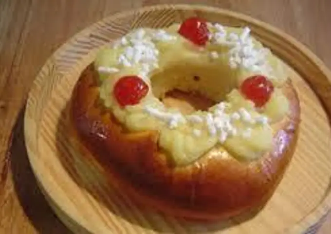

Rosca de Pascua:

Ingredientes:
30 minutos
15 raciones
- 10 gr levadura (la de sobrecito)
- 100cc agua tibia (aprox. 1/4 taza)
- 500 gr harina 000
- 1 cdita. sal
- 100 gr manteca blanda (sino poner unos seg en el microondas a mitad de potencia para ablandar)
- 4 huevos, uno de ellos para pintar
- 100 gr azúcar
- Ralladura de 1 limón y esencia de vainilla
** Para quien no sepa hacer la crema pastelera acá va a receta también
Se necesitan:
- 3 huevos
- 3 cdas fécula de maíz
- 3 cdas harina 000
- 300 gr azúcar
- 500 cc leche